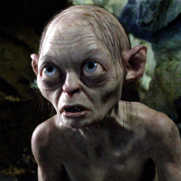

Gollum Personality Statistics
Statistics for the character of Gollum from Lord of the Rings, courtesy of the Open-Source Psychometrics Project. Open-Source Psychometrics
Full Personality Trait List
| Personality Traits | Average Rating | Rank |
|---|---|---|
| obsessed (not aloof) | 97.4 | 1 |
| scruffy (not manicured) | 95.9 | 2 |
| moody (not stable) | 95.4 | 2 |
| weird (not normal) | 94.7 | 4 |
| anxious (not calm) | 94.2 | 3 |
| extreme (not moderate) | 93.9 | 12 |
| sickly (not healthy) | 93.8 | 1 |
| repulsive (not attractive) | 93 | 3 |
| jealous (not compersive) | 92.6 | 1 |
| rugged (not refined) | 92.6 | 4 |
| disreputable (not prestigious) | 92.6 | 1 |
| selfish (not altruistic) | 92.3 | 11 |
| tense (not relaxed) | 92.2 | 4 |
| slovenly (not stylish) | 92.1 | 2 |
| suspicious (not trusting) | 92 | 12 |
| mischievous (not well behaved) | 92 | 18 |
| short (not tall) | 91.7 | 10 |
| outlaw (not sheriff) | 91.6 | 5 |
| poor (not rich) | 91.6 | 2 |
| unpolished (not eloquent) | 91.3 | 5 |
| vengeful (not forgiving) | 91 | 23 |
| barbaric (not civilized) | 91 | 4 |
| deviant (not average) | 91 | 6 |
| low-tech (not high-tech) | 90.9 | 2 |
| cunning (not honorable) | 90.8 | 8 |
| night owl (not morning lark) | 90.6 | 9 |
| quarrelsome (not warm) | 90.4 | 18 |
| chaotic (not orderly) | 89.9 | 16 |
| wild (not tame) | 89.9 | 19 |
| instinctual (not reasoned) | 89.7 | 8 |
| messy (not neat) | 89.7 | 9 |
| emotional (not logical) | 89.5 | 10 |
| backdoor (not official) | 89.4 | 15 |
| dramatic (not no-nonsense) | 89.3 | 13 |
| crafty (not scholarly) | 88.9 | 6 |
| driven (not unambitious) | 88.8 | 98 |
| bitter (not sweet) | 88.6 | 22 |
| scandalous (not proper) | 88.6 | 17 |
| old (not young) | 88.5 | 14 |
| poisonous (not nurturing) | 88.5 | 19 |
| creepy (not disarming) | 88.4 | 5 |
| arcane (not mainstream) | 88.3 | 4 |
| biased (not impartial) | 88.2 | 14 |
| unlucky (not fortunate) | 88.1 | 2 |
| feisty (not gracious) | 87.6 | 20 |
| awkward (not charming) | 87.6 | 10 |
| edgy (not politically correct) | 87.5 | 25 |
| individualist (not communal) | 87.4 | 21 |
| guarded (not open) | 87 | 59 |
| enslaved (not emancipated) | 87 | 1 |
| expressive (not stoic) | 86.7 | 40 |
| traitorous (not loyal) | 86.7 | 16 |
| rough (not smooth) | 86.7 | 15 |
| sorrowful (not cheery) | 86.1 | 19 |
| child free (not pronatalist) | 86.1 | 17 |
| sad (not happy) | 86 | 13 |
| close-minded (not open-minded) | 85.9 | 20 |
| debased (not pure) | 85.7 | 29 |
| angry (not good-humored) | 85.7 | 16 |
| depressed (not bright) | 85.7 | 4 |
| thin (not thick) | 85.6 | 5 |
| outsider (not insider) | 85.1 | 8 |
| demonic (not angelic) | 84.9 | 29 |
| luddite (not technophile) | 84.8 | 6 |
| lewd (not tasteful) | 84.5 | 15 |
| cold (not warm) | 84.4 | 49 |
| competitive (not cooperative) | 84.4 | 90 |
| insecure (not confident) | 84.2 | 9 |
| authoritarian (not democratic) | 84 | 58 |
| ugly (not beautiful) | 83.7 | 5 |
| ludicrous (not sensible) | 82.9 | 30 |
| ferocious (not pacifist) | 82.8 | 75 |
| provincial (not cosmopolitan) | 82.2 | 20 |
| villainous (not heroic) | 81.9 | 41 |
| rude (not respectful) | 81.9 | 41 |
| indulgent (not sober) | 81.6 | 53 |
| introvert (not extrovert) | 81.5 | 28 |
| conspiracist (not sheeple) | 81.3 | 65 |
| historical (not modern) | 81.2 | 35 |
| hurried (not leisurely) | 81.2 | 17 |
| judgemental (not accepting) | 80.9 | 71 |
| juvenile (not mature) | 80.9 | 46 |
| cryptic (not straightforward) | 80.8 | 15 |
| work-first (not family-first) | 80.6 | 87 |
| spicy (not mild) | 79.9 | 87 |
| suspicious (not awkward) | 79.7 | 79 |
| unorthodox (not traditional) | 79.6 | 79 |
| lustful (not chaste) | 79.5 | 79 |
| animalistic (not human) | 79.4 | 9 |
| hypocritical (not equitable) | 79.4 | 45 |
| kinky (not vanilla) | 79.3 | 61 |
| head@clouds (not down2earth) | 78.9 | 55 |
| lowbrow (not highbrow) | 78.8 | 15 |
| autistic (not neurotypical) | 78.6 | 5 |
| whimsical (not rational) | 78.4 | 61 |
| puny (not mighty) | 78.2 | 22 |
| beta (not alpha) | 77.9 | 62 |
| cruel (not kind) | 77.8 | 56 |
| private (not gregarious) | 77.7 | 95 |
| impatient (not patient) | 77.6 | 116 |
| libertarian (not socialist) | 77.3 | 26 |
| blue-collar (not ivory-tower) | 77 | 109 |
| codependent (not independent) | 77 | 50 |
| specialist (not generalist) | 76.9 | 47 |
| nonpolitical (not political) | 76.8 | 29 |
| focused on the present (not focused on the future) | 76.1 | 25 |
| spontaneous (not scheduled) | 76 | 98 |
| disorganized (not self-disciplined) | 76 | 61 |
| extraordinary (not mundane) | 76 | 155 |
| foolish (not wise) | 75.9 | 67 |
| cringeworthy (not inspiring) | 75.9 | 77 |
| sensitive (not thick-skinned) | 75 | 63 |
| nerd (not jock) | 74.9 | 157 |
| proletariat (not bourgeoisie) | 74.8 | 86 |
| subjective (not objective) | 74.6 | 18 |
| insulting (not complimentary) | 74.6 | 113 |
| pessimistic (not optimistic) | 74.4 | 69 |
| hoarder (not unprepared) | 74.2 | 71 |
| mysterious (not unambiguous) | 73.8 | 73 |
| explorer (not builder) | 73.3 | 77 |
| diligent (not lazy) | 73.2 | 380 |
| first-mate (not captain) | 72.8 | 156 |
| apprentice (not master) | 72.4 | 63 |
| soulless (not soulful) | 72.2 | 59 |
| arrogant (not humble) | 72 | 184 |
| resistant (not resigned) | 71.8 | 201 |
| frugal (not lavish) | 71.5 | 139 |
| flamboyant (not modest) | 71.3 | 150 |
| rebellious (not obedient) | 70.3 | 227 |
| utilitarian (not decorative) | 70.2 | 182 |
| uncreative (not open to new experinces) | 69.4 | 59 |
| creative (not conventional) | 69.4 | 144 |
| vain (not demure) | 69.4 | 168 |
| complicated (not simple) | 69.3 | 199 |
| roundabout (not direct) | 69.2 | 39 |
| strict (not lenient) | 69.2 | 174 |
| rigid (not flexible) | 68.9 | 166 |
| repetitive (not varied) | 68.8 | 120 |
| hard (not soft) | 68.1 | 186 |
| queer (not straight) | 68.1 | 29 |
| heathen (not devout) | 67.9 | 111 |
| idealist (not realist) | 67.8 | 129 |
| self-conscious (not self-assured) | 67.4 | 55 |
| active (not slothful) | 67.4 | 360 |
| street-smart (not sheltered) | 67.2 | 266 |
| impulsive (not cautious) | 67.1 | 174 |
| hard (not soft) | 67.1 | 195 |
| careful (not brave) | 67.1 | 73 |
| submissive (not dominant) | 67 | 103 |
| purple (not orange) | 66.8 | 85 |
| physical (not intellectual) | 66.3 | 125 |
| gossiping (not confidential) | 66.3 | 128 |
| artistic (not scientific) | 65.2 | 151 |
| resourceful (not helpless) | 65.2 | 421 |
| curious (not apathetic) | 64.9 | 282 |
| fast (not slow) | 64.9 | 258 |
| monochrome (not multicolored) | 63.9 | 155 |
| vague (not precise) | 63.8 | 79 |
| androgynous (not gendered) | 63.7 | 18 |
| chatty (not reserved) | 63.6 | 220 |
| vulnerable (not armoured) | 63.3 | 116 |
| empirical (not theoretical) | 63.1 | 182 |
| remote (not involved) | 62.4 | 49 |
| low IQ (not high IQ) | 61.8 | 58 |
| imaginative (not practical) | 61.5 | 135 |
| transient (not permanent) | 61.5 | 128 |
| worldly (not innocent) | 61.2 | 354 |
| assertive (not passive) | 60.7 | 396 |
| clumsy (not coordinated) | 60.4 | 140 |
| sarcastic (not genuine) | 60.4 | 196 |
| avant-garde (not classical) | 60.4 | 165 |
| literary (not mathematical) | 59.6 | 264 |
| hesitant (not decisive) | 59.5 | 110 |
| nihilist (not existentialist) | 59.5 | 109 |
| masculine (not feminine) | 58.8 | 327 |
| incompetent (not competent) | 58.5 | 94 |
| skeptical (not spiritual) | 58.4 | 379 |
| dunce (not genius) | 58.1 | 129 |
| uninspiring (not charismatic) | 57.9 | 89 |
| real (not philosophical) | 57 | 379 |
| bold (not serious) | 56.9 | 295 |
| loud (not quiet) | 56.3 | 274 |
| charming (not trusting) | 56 | 295 |
| workaholic (not slacker) | 54.9 | 455 |
| sporty (not bookish) | 54.2 | 228 |
| humorless (not funny) | 54 | 222 |
| serious (not playful) | 53.4 | 366 |
| stick-in-the-mud (not adventurous) | 53.3 | 222 |
| astonishing (not methodical) | 53.2 | 205 |
| basic (not hipster) | 53.2 | 408 |
| metaphorical (not literal) | 52.9 | 170 |
| bold (not shy) | 52.7 | 548 |
| atheist (not theist) | 52.3 | 366 |
| 'right-brained' (not 'left-brained') | 52.2 | 160 |
| interesting (not tiresome) | 51.8 | 445 |
| domestic (not industrial) | 51.3 | 266 |
| deliberate (not spontaneous) | 51.1 | 435 |
| meek (not bossy) | 51.1 | 178 |
| shy (not playful) | 51.1 | 175 |
| plays hard (not works hard) | 50.3 | 213 |
Top Five Most and Least Similar Characters
| Most Similar Characters | Least Similar Characters |
|---|---|
| 1. Pennsatucky Doggett (0.785) | 1. Esme Cullen (-0.726) |
| 2. Sid Phillips (0.775) | 2. Nick Young (-0.71) |
| 3. Moaning Myrtle (0.77) | 3. Cora Crawley, Countess of Grantham (-0.687) |
| 4. Cypher (0.758) | 4. Bo Peep (-0.665) |
| 5. Ben Chang (0.736) | 5. Carlisle Cullen (-0.651) |
Full Personality Match List
| Full Match List | Universe | % Match |
|---|---|---|
| 1. Gollum | Lord of the Rings | 98% |
| 2. Merle Dixon | The Walking Dead | 90% |
| 3. Pennsatucky Doggett | Orange is the New Black | 90% |
| 4. Ringo | Pulp Fiction | 90% |
| 5. Theon Greyjoy | Game of Thrones | 88% |
| 6. Moe Szyslak | The Simpsons | 88% |
| 7. Ben Chang | Community | 88% |
| 8. Sid Phillips | Toy Story | 88% |
| 9. Darlene Snell | Ozark | 87% |
| 10. Moaning Myrtle | Harry Potter | 86% |
| 11. Krusty the Clown | The Simpsons | 86% |
| 12. Bobby Briggs | Twin Peaks | 86% |
| 13. Leland Palmer | Twin Peaks | 86% |
| 14. George Costanza | Seinfeld | 86% |
| 15. Nelson Muntz | The Simpsons | 85% |
| 16. Jayne Cobb | Firefly + Serenity | 85% |
| 17. Shane Walsh | The Walking Dead | 85% |
| 18. Marla Singer | Fight Club | 85% |
| 19. Ziggy Sobotka | The Wire | 85% |
| 20. Oscar Bluth | Arrested Development | 85% |
| 21. Bellatrix Lestrange | Harry Potter | 84% |
| 22. Hector Barbossa | Pirates of the Caribbean | 84% |
| 23. Cypher | The Matrix | 84% |
| 24. George Bluth, Sr. | Arrested Development | 84% |
| 25. Thomas Barrow | Downton Abbey | 83% |
| 26. Britta Perry | Community | 83% |
| 27. Roy Petty | Ozark | 83% |
| 28. Joffrey Baratheon | Game of Thrones | 82% |
| 29. Jimmy McNulty | The Wire | 82% |
| 30. The Joker | The Dark Knight | 82% |
| 31. Sarah O'Brien | Downton Abbey | 81% |
| 32. Man in Black | Westworld | 81% |
| 33. Scar | The Lion King | 81% |
| 34. Myrtle Wilson | The Great Gatsby | 81% |
| 35. Meredith Palmer | The Office | 80% |
| 36. Tyler Durden | Fight Club | 80% |
| 37. the Alien | Alien | 80% |
| 38. Sandor Clegane | Game of Thrones | 79% |
| 39. Lord Voldemort | Harry Potter | 79% |
| 40. Haymitch Abernathy | The Hunger Games | 79% |
| 41. Dennis Nedry | Jurassic Park | 79% |
| 42. Ygritte | Game of Thrones | 78% |
| 43. Alastor Moody | Harry Potter | 78% |
| 44. James 'Sawyer' Ford | LOST | 78% |
| 45. Jane Margolis | Breaking Bad | 78% |
| 46. Rust Cohle | True Detective | 78% |
| 47. Kara 'Starbuck' Thrace | Battlestar Galactica | 78% |
| 48. Seth | Superbad | 78% |
| 49. Crazy Eyes | Orange is the New Black | 78% |
| 50. Butch Coolidge | Pulp Fiction | 78% |
| 51. Jesse Pinkman | Breaking Bad | 77% |
| 52. Jimmy McGill | Breaking Bad | 77% |
| 53. Pierce Hawthorne | Community | 77% |
| 54. Nick Sobotka | The Wire | 77% |
| 55. Janis Ian | Mean Girls | 77% |
| 56. Tim Riggins | Friday Night Lights | 77% |
| 57. Ruth Langmore | Ozark | 77% |
| 58. Michael Dawson | LOST | 76% |
| 59. John Locke | LOST | 76% |
| 60. April Ludgate | Parks and Recreation | 76% |
| 61. Ian Duncan | Community | 76% |
| 62. Jack Sparrow | Pirates of the Caribbean | 76% |
| 63. George Oscar 'Gob' Bluth | Arrested Development | 76% |
| 64. Shae | Game of Thrones | 75% |
| 65. Dwight Schrute | The Office | 75% |
| 66. Thanos | Marvel Cinematic Universe | 75% |
| 67. Vicious | Cowboy Bebop | 75% |
| 68. Prince John | Robin Hood | 75% |
| 69. Mal Cobb | Inception | 75% |
| 70. Tyra Collette | Friday Night Lights | 75% |
| 71. Lisa | The Room | 75% |
| 72. Cosmo Kramer | Seinfeld | 75% |
| 73. Jacob Snell | Ozark | 75% |
| 74. Arya Stark | Game of Thrones | 74% |
| 75. Bronn | Game of Thrones | 74% |
| 76. Loki | Marvel Cinematic Universe | 74% |
| 77. Steven Hyde | That 70's Show | 74% |
| 78. Thomas 'Herc' Hauk | The Wire | 74% |
| 79. Don Draper | Mad Men | 74% |
| 80. Jian-Yang | Silicon Valley | 74% |
| 81. Sheriff of Nottingham | Robin Hood | 74% |
| 82. Stannis Baratheon | Game of Thrones | 73% |
| 83. Draco Malfoy | Harry Potter | 73% |
| 84. George Wickham | Pride and Prejudice | 73% |
| 85. Kate Austen | LOST | 73% |
| 86. Preston 'Bodie' Broadus | The Wire | 73% |
| 87. Avon Barksdale | The Wire | 73% |
| 88. Nicky Nichols | Orange is the New Black | 73% |
| 89. Asha Greyjoy | Game of Thrones | 72% |
| 90. Quark | Star Trek Deep Space Nine | 72% |
| 91. Erlich Bachman | Silicon Valley | 72% |
| 92. Wyatt Langmore | Ozark | 72% |
| 93. Melisandre | Game of Thrones | 71% |
| 94. Cersei Lannister | Game of Thrones | 71% |
| 95. Benjamin Linus | LOST | 71% |
| 96. Malcolm Reynolds | Firefly + Serenity | 71% |
| 97. Daryl Dixon | The Walking Dead | 71% |
| 98. William Rawls | The Wire | 71% |
| 99. Omar Little | The Wire | 71% |
| 100. Chris Partlow | The Wire | 71% |
| 101. Frank Sobotka | The Wire | 71% |
| 102. Saul Tigh | Battlestar Galactica | 71% |
| 103. Faye Valentine | Cowboy Bebop | 71% |
| 104. Jacob Black | Twilight | 71% |
| 105. Mrs. Bennet | Pride and Prejudice | 70% |
| 106. Alex Karev | Grey's Anatomy | 70% |
| 107. Mr. Burns | The Simpsons | 70% |
| 108. Walter White | Breaking Bad | 70% |
| 109. River Tam | Firefly + Serenity | 70% |
| 110. Reginald 'Bubbles' Cousins | The Wire | 70% |
| 111. Spiros 'Vondas' Vondopoulos | The Wire | 70% |
| 112. Gaius Baltar | Battlestar Galactica | 70% |
| 113. Angel | Buffy the Vampire Slayer | 70% |
| 114. Mercutio | Romeo and Juliet | 70% |
| 115. Rosa Diaz | Brooklyn Nine-Nine | 70% |
| 116. Johnny | The Room | 70% |
| 117. Petyr Baelish | Game of Thrones | 69% |
| 118. Rita Skeeter | Harry Potter | 69% |
| 119. Robert California | The Office | 69% |
| 120. Zuko | Avatar The Last Airbender | 69% |
| 121. Azula | Avatar The Last Airbender | 69% |
| 122. Bart Simpson | The Simpsons | 69% |
| 123. Darth Vader | Star Wars | 69% |
| 124. Joey Quinn | Dexter | 69% |
| 125. Akecheta | Westworld | 69% |
| 126. Sal Maroni | The Dark Knight | 69% |
| 127. Dom Cobb | Inception | 69% |
| 128. Alex Vause | Orange is the New Black | 69% |
| 129. Vincent Vega | Pulp Fiction | 69% |
| 130. Frank Burns | M*A*S*H | 69% |
| 131. Sirius Black | Harry Potter | 68% |
| 132. Jan Levinson | The Office | 68% |
| 133. Toph Beifong | Avatar The Last Airbender | 68% |
| 134. Gimli | Lord of the Rings | 68% |
| 135. Tom Buchanan | The Great Gatsby | 68% |
| 136. Jo March | Little Women | 68% |
| 137. Sam Healy | Orange is the New Black | 68% |
| 138. Smash Williams | Friday Night Lights | 68% |
| 139. Charlie Harper | Two and Half Men | 68% |
| 140. Daenerys Targaryen | Game of Thrones | 67% |
| 141. Dolores Umbridge | Harry Potter | 67% |
| 142. Ryan Howard | The Office | 67% |
| 143. Firelord Ozai | Avatar The Last Airbender | 67% |
| 144. Edna Krabappel | The Simpsons | 67% |
| 145. Han Solo | Star Wars | 67% |
| 146. Debra Morgan | Dexter | 67% |
| 147. Clay Davis | The Wire | 67% |
| 148. Timon | The Lion King | 67% |
| 149. Sherlock Holmes | Sherlock | 67% |
| 150. Bertram Gilfoyle | Silicon Valley | 67% |
| 151. Gavin Belson | Silicon Valley | 67% |
| 152. Benjamin Horne | Twin Peaks | 67% |
| 153. Catherine Martell | Twin Peaks | 67% |
| 154. Officer Slater | Superbad | 67% |
| 155. Rachel Garrison | Ozark | 67% |
| 156. Dobby | Harry Potter | 66% |
| 157. Charlie Pace | LOST | 66% |
| 158. Andrea | The Walking Dead | 66% |
| 159. Katniss Everdeen | The Hunger Games | 66% |
| 160. James Doakes | Dexter | 66% |
| 161. Pete Campbell | Mad Men | 66% |
| 162. Fox Mulder | The X-Files | 66% |
| 163. Mr. Potato Head | Toy Story | 66% |
| 164. Red Reznikov | Orange is the New Black | 66% |
| 165. James Taggart | Atlas Shrugged | 66% |
| 166. Berta | Two and Half Men | 66% |
| 167. Maeby Funke | Arrested Development | 66% |
| 168. Lucille Bluth | Arrested Development | 66% |
| 169. Dukat | Star Trek Deep Space Nine | 65% |
| 170. Bob Pinciotti | That 70's Show | 65% |
| 171. Homer Simpson | The Simpsons | 65% |
| 172. Barney Gumble | The Simpsons | 65% |
| 173. Boromir | Lord of the Rings | 65% |
| 174. Marty Hart | True Detective | 65% |
| 175. Dolores Abernathy | Westworld | 65% |
| 176. Logan Delos | Westworld | 65% |
| 177. Stan Rizzo | Mad Men | 65% |
| 178. Petunia Dursley | Harry Potter | 64% |
| 179. Elim Garak | Star Trek Deep Space Nine | 64% |
| 180. Peter Jason Quill | Marvel Cinematic Universe | 64% |
| 181. Craig Pelton | Community | 64% |
| 182. Michael Lee | The Wire | 64% |
| 183. James Hurley | Twin Peaks | 64% |
| 184. Spike Spiegel | Cowboy Bebop | 64% |
| 185. Lorna Morello | Orange is the New Black | 64% |
| 186. Mark | The Room | 64% |
| 187. Morty Seinfeld | Seinfeld | 64% |
| 188. Carol Peletier | The Walking Dead | 63% |
| 189. Audrey Horne | Twin Peaks | 63% |
| 190. Romeo Montague | Romeo and Juliet | 63% |
| 191. Bella Swan | Twilight | 63% |
| 192. Maxwell Klinger | M*A*S*H | 63% |
| 193. Stuart Bloom | The Big Bang Theory | 62% |
| 194. Coriolanus Snow | The Hunger Games | 62% |
| 195. Joshamee Gibbs | Pirates of the Caribbean | 62% |
| 196. Elliot Stabler | Law & Order SVU | 62% |
| 197. Flaca Gonzales | Orange is the New Black | 62% |
| 198. Lindsay Bluth Funke | Arrested Development | 62% |
| 199. Jaime Lannister | Game of Thrones | 61% |
| 200. Oberyn Martell | Game of Thrones | 61% |
| 201. Nymphadora Tonks | Harry Potter | 61% |
| 202. Lydia Bennet | Pride and Prejudice | 61% |
| 203. Winn Adami | Star Trek Deep Space Nine | 61% |
| 204. Ron Swanson | Parks and Recreation | 61% |
| 205. Clarence Royce | The Wire | 61% |
| 206. Paul Kinsey | Mad Men | 61% |
| 207. Cady Heron | Mean Girls | 61% |
| 208. Mia Wallace | Pulp Fiction | 61% |
| 209. Elaine Benes | Seinfeld | 61% |
| 210. Michael Scott | The Office | 60% |
| 211. Sokka | Avatar The Last Airbender | 60% |
| 212. Gamora | Marvel Cinematic Universe | 60% |
| 213. Michael Kelso | That 70's Show | 60% |
| 214. Red Forman | That 70's Show | 60% |
| 215. Maeve Millay | Westworld | 60% |
| 216. Samuel 'Longshot' Anders | Battlestar Galactica | 60% |
| 217. Jack O'Neill | Stargate SG-1 | 60% |
| 218. Francisco d'Anconia | Atlas Shrugged | 60% |
| 219. Evelyn Harper | Two and Half Men | 60% |
| 220. Severus Snape | Harry Potter | 59% |
| 221. Josh Lyman | The West Wing | 59% |
| 222. Leslie Winkle | The Big Bang Theory | 59% |
| 223. Dexter Morgan | Dexter | 59% |
| 224. Harry Morgan | Dexter | 59% |
| 225. Harvey Dent | The Dark Knight | 59% |
| 226. Sharon 'Boomer' Valerii | Battlestar Galactica | 59% |
| 227. Buffy Summers | Buffy the Vampire Slayer | 59% |
| 228. Jay Gatsby | The Great Gatsby | 59% |
| 229. Regina George | Mean Girls | 59% |
| 230. Marsellus Wallace | Pulp Fiction | 59% |
| 231. Tobias Funke | Arrested Development | 59% |
| 232. Tywin Lannister | Game of Thrones | 58% |
| 233. Ron Weasley | Harry Potter | 58% |
| 234. Cornelius Fudge | Harry Potter | 58% |
| 235. Phoebe Buffay | Friends | 58% |
| 236. Andy Bernard | The Office | 58% |
| 237. Kelly Kapoor | The Office | 58% |
| 238. Mr. William Collins | Pride and Prejudice | 58% |
| 239. Marie Schrader | Breaking Bad | 58% |
| 240. Odafin Tutuola | Law & Order SVU | 58% |
| 241. Ellis Wyatt | Atlas Shrugged | 58% |
| 242. Jules Winnfield | Pulp Fiction | 58% |
| 243. Buster Bluth | Arrested Development | 58% |
| 244. Viktor Krum | Harry Potter | 57% |
| 245. George Weasley | Harry Potter | 57% |
| 246. Kevin Malone | The Office | 57% |
| 247. Toby Ziegler | The West Wing | 57% |
| 248. Lady Catherine de Bourgh | Pride and Prejudice | 57% |
| 249. Desmond Hume | LOST | 57% |
| 250. Thor | Marvel Cinematic Universe | 57% |
| 251. Fez | That 70's Show | 57% |
| 252. Mike Ehrmantraut | Breaking Bad | 57% |
| 253. Tommy Carcetti | The Wire | 57% |
| 254. Dr. Ian Malcolm | Jurassic Park | 57% |
| 255. Agent Smith | The Matrix | 57% |
| 256. Edward Cullen | Twilight | 57% |
| 257. Jasper Hale | Twilight | 57% |
| 258. Judith Harper-Melnick | Two and Half Men | 57% |
| 259. Kevin Pearson | This Is Us | 57% |
| 260. Worf | Star Trek Deep Space Nine | 56% |
| 261. Nick Fury | Marvel Cinematic Universe | 56% |
| 262. Lee Sizemore | Westworld | 56% |
| 263. Clementine Pennyfeather | Westworld | 56% |
| 264. Number Six | Battlestar Galactica | 56% |
| 265. Roger Sterling | Mad Men | 56% |
| 266. Xander Harris | Buffy the Vampire Slayer | 56% |
| 267. Robin Hood | Robin Hood | 56% |
| 268. Lambert | Alien | 56% |
| 269. Jake Peralta | Brooklyn Nine-Nine | 56% |
| 270. Jeff Winger | Community | 55% |
| 271. Lori Grimes | The Walking Dead | 55% |
| 272. Samantha Jones | Sex and the City | 55% |
| 273. Ervin Burrell | The Wire | 55% |
| 274. Maurice Levy | The Wire | 55% |
| 275. Rick Blaine | Casablanca | 55% |
| 276. Donna Hayward | Twin Peaks | 55% |
| 277. Parker | Alien | 55% |
| 278. Rex | Toy Story | 55% |
| 279. Piper Chapman | Orange is the New Black | 55% |
| 280. Rosalie Hale | Twilight | 55% |
| 281. Jake Harper | Two and Half Men | 55% |
| 282. Rubeus Hagrid | Harry Potter | 54% |
| 283. Horace Slughorn | Harry Potter | 54% |
| 284. Angela Martin | The Office | 54% |
| 285. Claire Littleton | LOST | 54% |
| 286. Kira Nerys | Star Trek Deep Space Nine | 54% |
| 287. Hawkeye | Marvel Cinematic Universe | 54% |
| 288. Izzie Stevens | Grey's Anatomy | 54% |
| 289. Rick Grimes | The Walking Dead | 54% |
| 290. Gale Hawthorne | The Hunger Games | 54% |
| 291. Pumbaa | The Lion King | 54% |
| 292. Lucy Moran | Twin Peaks | 54% |
| 293. John Galt | Atlas Shrugged | 54% |
| 294. Emmett Cullen | Twilight | 54% |
| 295. Jon Snow | Game of Thrones | 53% |
| 296. Varys | Game of Thrones | 53% |
| 297. Remus Lupin | Harry Potter | 53% |
| 298. Joey Tribbiani | Friends | 53% |
| 299. Jackie Burkhart | That 70's Show | 53% |
| 300. Gus Fring | Breaking Bad | 53% |
| 301. Howard Wolowitz | The Big Bang Theory | 53% |
| 302. Carl Grimes | The Walking Dead | 53% |
| 303. Robert Ford | Westworld | 53% |
| 304. Betty Draper | Mad Men | 53% |
| 305. Shelly Johnson | Twin Peaks | 53% |
| 306. Ed | Cowboy Bebop | 53% |
| 307. Fogell | McLovin | |
| 308. Denny | The Room | 53% |
| 309. Wendy Byrde | Ozark | 53% |
| 310. Elizabeth Bennet | Pride and Prejudice | 52% |
| 311. Shannon Rutherford | LOST | 52% |
| 312. Rom | Star Trek Deep Space Nine | 52% |
| 313. Black Widow | Marvel Cinematic Universe | 52% |
| 314. Hank Schrader | Breaking Bad | 52% |
| 315. Pippin Took | Lord of the Rings | 52% |
| 316. Daisy Mason | Downton Abbey | 52% |
| 317. The Operative | Firefly + Serenity | 52% |
| 318. The Narrator | Fight Club | 52% |
| 319. D'Angelo Barksdale | The Wire | 52% |
| 320. Charlotte Hale | Westworld | 52% |
| 321. Will Turner | Pirates of the Caribbean | 52% |
| 322. John Munch | Law & Order SVU | 52% |
| 323. Ash | Alien | 52% |
| 324. Harry Potter | Harry Potter | 51% |
| 325. Chandler Bing | Friends | 51% |
| 326. Sayid Jarrah | LOST | 51% |
| 327. Meredith Grey | Grey's Anatomy | 51% |
| 328. Cristina Yang | Grey's Anatomy | 51% |
| 329. Carrie Bradshaw | Sex and the City | 51% |
| 330. Ellis Carver | The Wire | 51% |
| 331. Bruce Wayne | The Dark Knight | 51% |
| 332. Goh Peik Lin | Crazy Rich Asians | 51% |
| 333. Richard Hendricks | Silicon Valley | 51% |
| 334. Pete Martell | Twin Peaks | 51% |
| 335. Benjamin 'Hawkeye' Pierce | M*A*S*H | 51% |
| 336. Brienne of Tarth | Game of Thrones | 50% |
| 337. Tony Stark | Marvel Cinematic Universe | 50% |
| 338. Captain Marvel | Marvel Cinematic Universe | 50% |
| 339. Beryl Patmore | Downton Abbey | 50% |
| 340. Mary Cooper | The Big Bang Theory | 50% |
| 341. Tom Haverford | Parks and Recreation | 50% |
| 342. Troy Barnes | Community | 50% |
| 343. Thomas Matthews | Dexter | 50% |
| 344. Russell 'Stringer' Bell | The Wire | 50% |
| 345. Dennis 'Cutty' Wise | The Wire | 50% |
| 346. Dinesh Chugtai | Silicon Valley | 50% |
| 347. Josie Packard | Twin Peaks | 50% |
| 348. Daisy Buchanan | The Great Gatsby | 50% |
| 349. Gretchen Wieners | Mean Girls | 50% |
| 350. Damian Leigh | Mean Girls | 50% |
| 351. Jorah Mormont | Game of Thrones | 49% |
| 352. Midge Pinciotti | That 70's Show | 49% |
| 353. Principal Skinner | The Simpsons | 49% |
| 354. Skyler White | Breaking Bad | 49% |
| 355. Sheldon Cooper | The Big Bang Theory | 49% |
| 356. Penny | The Big Bang Theory | 49% |
| 357. Bunk Moreland | The Wire | 49% |
| 358. Peggy Olson | Mad Men | 49% |
| 359. Mycroft Holmes | Sherlock | 49% |
| 360. Neo | The Matrix | 49% |
| 361. Leroy Jethro Gibbs | NCIS | 49% |
| 362. Margaret 'Hot Lips' Houlihan | M*A*S*H | 49% |
| 363. Ross Geller | Friends | 48% |
| 364. Ty Lee | Avatar The Last Airbender | 48% |
| 365. Merry Brandybuck | Lord of the Rings | 48% |
| 366. Kima Greggs | The Wire | 48% |
| 367. Lau | The Dark Knight | 48% |
| 368. Salvatore Romano | Mad Men | 48% |
| 369. Teal'c | Stargate SG-1 | 48% |
| 370. Ellen Ripley | Alien | 48% |
| 371. Kate Pearson | This Is Us | 48% |
| 372. Marty Byrde | Ozark | 48% |
| 373. Tyrion Lannister | Game of Thrones | 47% |
| 374. Stanley Hudson | The Office | 47% |
| 375. Odo | Star Trek Deep Space Nine | 47% |
| 376. Nog | Star Trek Deep Space Nine | 47% |
| 377. Aragorn | Lord of the Rings | 47% |
| 378. Vince Masuka | Dexter | 47% |
| 379. Galen Tyrol | Battlestar Galactica | 47% |
| 380. Eleanor Sung-Young | Crazy Rich Asians | 47% |
| 381. Ed Hurley | Twin Peaks | 47% |
| 382. Trinity | The Matrix | 47% |
| 383. Juliet Capulet | Romeo and Juliet | 47% |
| 384. June George | Mean Girls | 47% |
| 385. Little John | Robin Hood | 47% |
| 386. Amy March | Little Women | 47% |
| 387. Henry Rearden | Atlas Shrugged | 47% |
| 388. Anthony DiNozzo | NCIS | 47% |
| 389. Brandon Stark | Game of Thrones | 46% |
| 390. Molly Weasley | Harry Potter | 46% |
| 391. Hoban Washburne | Firefly + Serenity | 46% |
| 392. Effie Trinket | The Hunger Games | 46% |
| 393. Ashley Stubbs | Westworld | 46% |
| 394. Cordelia Chase | Buffy the Vampire Slayer | 46% |
| 395. Elizabeth Swann | Pirates of the Caribbean | 46% |
| 396. Mr. Saito | Inception | 46% |
| 397. Dagny Taggart | Atlas Shrugged | 46% |
| 398. Toby Damon | This Is Us | 46% |
| 399. Olenna Tyrell | Game of Thrones | 45% |
| 400. Luke Skywalker | Star Wars | 45% |
| 401. Cally Henderson | Battlestar Galactica | 45% |
| 402. Joan Holloway | Mad Men | 45% |
| 403. Dr. Alan Grant | Jurassic Park | 45% |
| 404. Buzz Lightyear | Toy Story | 45% |
| 405. Michelle | The Room | 45% |
| 406. William H. 'Shakespeare' Hill | This Is Us | 45% |
| 407. Luna Lovegood | Harry Potter | 44% |
| 408. Kelly Erin Hannon | The Office | 44% |
| 409. Mr. Darcy | Pride and Prejudice | 44% |
| 410. Lady Mary Crawley | Downton Abbey | 44% |
| 411. Violet Crawley, Dowager Countess | Downton Abbey | 44% |
| 412. Zoe Washburne | Firefly + Serenity | 44% |
| 413. Mr. Big | Sex and the City | 44% |
| 414. Karl 'Helo' Agathon | Battlestar Galactica | 44% |
| 415. Jet Black | Cowboy Bebop | 44% |
| 416. Jordan Baker | The Great Gatsby | 44% |
| 417. Taystee Jefferson | Orange is the New Black | 44% |
| 418. Landry Clarke | Friday Night Lights | 44% |
| 419. Jerry Seinfeld | Seinfeld | 44% |
| 420. Helen Seinfeld | Seinfeld | 44% |
| 421. Alan Harper | Two and Half Men | 44% |
| 422. Abby Sciuto | NCIS | 44% |
| 423. Davos Seaworth | Game of Thrones | 43% |
| 424. Jin-Soo Kwon | LOST | 43% |
| 425. Gandalf | Lord of the Rings | 43% |
| 426. Abed Nadir | Community | 43% |
| 427. Theresa Cullen | Westworld | 43% |
| 428. Peter Gregory | Silicon Valley | 43% |
| 429. Theodore Laurence | Little Women | 43% |
| 430. Charles Boyle | Brooklyn Nine-Nine | 43% |
| 431. Charlotte Byrde | Ozark | 43% |
| 432. Rachel Green | Friends | 42% |
| 433. Aang | Avatar The Last Airbender | 42% |
| 434. Hugo 'Hurley' Reyes | LOST | 42% |
| 435. Dr. Strange | Marvel Cinematic Universe | 42% |
| 436. Eric Forman | That 70's Show | 42% |
| 437. John Bates | Downton Abbey | 42% |
| 438. Teddy Flood | Westworld | 42% |
| 439. Lane Pryce | Mad Men | 42% |
| 440. Walter Skinner | The X-Files | 42% |
| 441. Karen Smith | Mean Girls | 42% |
| 442. Charlie Swan | Twilight | 42% |
| 443. Jack Pearson | This Is Us | 42% |
| 444. Margaery Tyrell | Game of Thrones | 41% |
| 445. Steve Brady | Sex and the City | 41% |
| 446. Simba | The Lion King | 41% |
| 447. Rachel Menken | Mad Men | 41% |
| 448. Ray Arnold | Jurassic Park | 41% |
| 449. James Norrington | Pirates of the Caribbean | 41% |
| 450. Dallas | Alien | 41% |
| 451. Matt Saracen | Friday Night Lights | 41% |
| 452. Addison Montgomery | Grey's Anatomy | 40% |
| 453. Lady Edith Crawley | Downton Abbey | 40% |
| 454. Kaylee Frye | Firefly + Serenity | 40% |
| 455. Maggie Hart | True Detective | 40% |
| 456. Miranda Hobbes | Sex and the City | 40% |
| 457. Maria LaGuerta | Dexter | 40% |
| 458. Angel Batista | Dexter | 40% |
| 459. Roland 'Prez' Pryzbylewski | The Wire | 40% |
| 460. William Adama | Battlestar Galactica | 40% |
| 461. Ms. Sharon Norbury | Mean Girls | 40% |
| 462. Robert Fischer | Inception | 40% |
| 463. Michael Bluth | Arrested Development | 40% |
| 464. Arthur Weasley | Harry Potter | 39% |
| 465. Monica Geller | Friends | 39% |
| 466. Miranda Bailey | Grey's Anatomy | 39% |
| 467. Preston Burke | Grey's Anatomy | 39% |
| 468. Milhouse Van Houten | The Simpsons | 39% |
| 469. Harry Crane | Mad Men | 39% |
| 470. Nelson Bighetti | Silicon Valley | 39% |
| 471. Julia | Cowboy Bebop | 39% |
| 472. Morpheus | The Matrix | 39% |
| 473. Betsy Heron | Mean Girls | 39% |
| 474. Jonah Byrde | Ozark | 39% |
| 475. Sansa Stark | Game of Thrones | 38% |
| 476. Leo McGarry | The West Wing | 38% |
| 477. Bruce Banner | Marvel Cinematic Universe | 38% |
| 478. Apu Nahasapeemapetilon | The Simpsons | 38% |
| 479. Leslie Knope | Parks and Recreation | 38% |
| 480. Anthony Garcia | The Dark Knight | 38% |
| 481. Bert Cooper | Mad Men | 38% |
| 482. Frodo Baggins | Lord of the Rings | 37% |
| 483. Lady Sybil Crawley | Downton Abbey | 37% |
| 484. Cedric Daniels | The Wire | 37% |
| 485. Bernard Lowe | Westworld | 37% |
| 486. James Gordon | The Dark Knight | 37% |
| 487. John Hammond | Jurassic Park | 37% |
| 488. D.I. Greg Lestrade | Sherlock | 37% |
| 489. The Nurse | Romeo and Juliet | 37% |
| 490. Benvolio | Romeo and Juliet | 37% |
| 491. Raymond Holt | Brooklyn Nine-Nine | 37% |
| 492. Catelyn Stark | Game of Thrones | 36% |
| 493. Albus Dumbledore | Harry Potter | 36% |
| 494. Kitty Forman | That 70's Show | 36% |
| 495. Raj Koothrappali | The Big Bang Theory | 36% |
| 496. Dale Horvath | The Walking Dead | 36% |
| 497. Felix Lutz | Westworld | 36% |
| 498. Rupert Giles | Buffy the Vampire Slayer | 36% |
| 499. Donald Cragen | Law & Order SVU | 36% |
| 500. Friar Laurence | Romeo and Juliet | 36% |
| 501. Evan | Superbad | 36% |
| 502. Julie Taylor | Friday Night Lights | 36% |
| 503. George Michael Bluth | Arrested Development | 36% |
| 504. Eddard Stark | Game of Thrones | 35% |
| 505. Robb Stark | Game of Thrones | 35% |
| 506. Jack Shephard | LOST | 35% |
| 507. George O'Malley | Grey's Anatomy | 35% |
| 508. Elsie Hughes | Westworld | 35% |
| 509. Lee 'Apollo' Adama | Battlestar Galactica | 35% |
| 510. Felix Gaeta | Battlestar Galactica | 35% |
| 511. Willow Rosenberg | Buffy the Vampire Slayer | 35% |
| 512. Sheriff Truman | Twin Peaks | 35% |
| 513. Ariadne | Inception | 35% |
| 514. Eric Taylor | Friday Night Lights | 35% |
| 515. Alice Cullen | Twilight | 35% |
| 516. Juliet Burke | LOST | 34% |
| 517. Captain America | Marvel Cinematic Universe | 34% |
| 518. Donna Pinciotti | That 70's Show | 34% |
| 519. Obi-Wan Kenobi | Star Wars | 34% |
| 520. Legolas | Lord of the Rings | 34% |
| 521. Charlie Carson | Downton Abbey | 34% |
| 522. Bernadette Rostenkowski | The Big Bang Theory | 34% |
| 523. Amy Farrah Fowler | The Big Bang Theory | 34% |
| 524. Norman Wilson | The Wire | 34% |
| 525. Terry Jeffords | Brooklyn Nine-Nine | 34% |
| 526. Peter | The Room | 34% |
| 527. Hermione Granger | Harry Potter | 33% |
| 528. Filius Flitwick | Harry Potter | 33% |
| 529. William Mason | Downton Abbey | 33% |
| 530. Peeta Mellark | The Hunger Games | 33% |
| 531. Dr. John Watson | Sherlock | 33% |
| 532. Woody | Toy Story | 33% |
| 533. Miles O'Brien | Star Trek Deep Space Nine | 32% |
| 534. C-3PO | Star Wars | 32% |
| 535. Samwise Gamgee | Lord of the Rings | 32% |
| 536. Inara Serra | Firefly + Serenity | 32% |
| 537. Lester Freamon | The Wire | 32% |
| 538. Jared Dunn | Silicon Valley | 32% |
| 539. Dale Cooper | Twin Peaks | 32% |
| 540. Daniel Jackson | Stargate SG-1 | 32% |
| 541. Randall Pearson | This Is Us | 32% |
| 542. Minerva McGonagall | Harry Potter | 31% |
| 543. Lisa Simpson | The Simpsons | 31% |
| 544. Waylon Smithers | The Simpsons | 31% |
| 545. Leonard Hofstadter | The Big Bang Theory | 31% |
| 546. Annie Edison | Community | 31% |
| 547. Shirley Bennett | Community | 31% |
| 548. Rhonda Pearlman | The Wire | 31% |
| 549. Ilsa Lund | Casablanca | 31% |
| 550. Henry Francis | Mad Men | 31% |
| 551. Olivia Benson | Law & Order SVU | 31% |
| 552. The Oracle | The Matrix | 31% |
| 553. George S. Hammond | Stargate SG-1 | 31% |
| 554. Samwell Tarly | Game of Thrones | 30% |
| 555. C. J. Cregg | The West Wing | 30% |
| 556. Benjamin Sisko | Star Trek Deep Space Nine | 30% |
| 557. Richard Webber | Grey's Anatomy | 30% |
| 558. Mark Brendanawicz | Parks and Recreation | 30% |
| 559. Beatrice 'Beadie' Russell | The Wire | 30% |
| 560. Laura Roslin | Battlestar Galactica | 30% |
| 561. Nick Carraway | The Great Gatsby | 30% |
| 562. Friar Tuck | Robin Hood | 30% |
| 563. Lyla Garrity | Friday Night Lights | 30% |
| 564. Amy Santiago | Brooklyn Nine-Nine | 30% |
| 565. Jim Halpert | The Office | 29% |
| 566. Phyllis Lapin | The Office | 29% |
| 567. Princess Leia | Star Wars | 29% |
| 568. Anastasia Dualla | Battlestar Galactica | 29% |
| 569. Dana Scully | The X-Files | 29% |
| 570. Jason Street | Friday Night Lights | 29% |
| 571. Walter 'Radar' O'Reilly | M*A*S*H | 29% |
| 572. Abbey Bartlet | The West Wing | 28% |
| 573. Iroh | Avatar The Last Airbender | 28% |
| 574. Hakoda | Avatar The Last Airbender | 28% |
| 575. Simon Tam | Firefly + Serenity | 28% |
| 576. Ginny Weasley | Harry Potter | 27% |
| 577. Jadzia Dax | Star Trek Deep Space Nine | 27% |
| 578. Black Panther | Marvel Cinematic Universe | 27% |
| 579. Rita Bennett | Dexter | 27% |
| 580. Rachel Dawes | The Dark Knight | 27% |
| 581. Mrs. Hudson | Sherlock | 27% |
| 582. Molly Hooper | Sherlock | 27% |
| 583. Julian Bashir | Star Trek Deep Space Nine | 26% |
| 584. Peggy Carter | Marvel Cinematic Universe | 26% |
| 585. Ned Flanders | The Simpsons | 26% |
| 586. Aaron Samuels | Mean Girls | 26% |
| 587. Rebecca Pearson | This Is Us | 26% |
| 588. Sun-Hwa Kwon | LOST | 25% |
| 589. Robert Crawley, 7th Earl of Grantham | Downton Abbey | 25% |
| 590. Elsie Carson | Downton Abbey | 25% |
| 591. Victor Laszlo | Casablanca | 25% |
| 592. Beth March | Little Women | 25% |
| 593. Timothy McGee | NCIS | 25% |
| 594. Jimmy Palmer | NCIS | 25% |
| 595. Sam Seaborn | The West Wing | 24% |
| 596. Donna Moss | The West Wing | 24% |
| 597. Katara | Avatar The Last Airbender | 24% |
| 598. Marge Simpson | The Simpsons | 24% |
| 599. Flynn White | Breaking Bad | 24% |
| 600. Derrial Book | Firefly + Serenity | 24% |
| 601. Astrid Leong-Teo | Crazy Rich Asians | 24% |
| 602. Dr. Ellie Sattler | Jurassic Park | 24% |
| 603. Melinda Warner | Law & Order SVU | 24% |
| 604. Norma Jennings | Twin Peaks | 24% |
| 605. Samantha Carter | Stargate SG-1 | 24% |
| 606. Fleur Delacour | Harry Potter | 23% |
| 607. Josiah Bartlet | The West Wing | 23% |
| 608. Jake Sisko | Star Trek Deep Space Nine | 23% |
| 609. Glenn Rhee | The Walking Dead | 23% |
| 610. Charlotte York | Sex and the City | 23% |
| 611. Lucius Fox | The Dark Knight | 23% |
| 612. Colin Khoo | Crazy Rich Asians | 23% |
| 613. Pam Beesly | The Office | 22% |
| 614. Joey Lucas | The West Wing | 22% |
| 615. Kasidy Yates | Star Trek Deep Space Nine | 22% |
| 616. Derek Shepherd | Grey's Anatomy | 22% |
| 617. Alfred Pennyworth | The Dark Knight | 22% |
| 618. Mufasa | The Lion King | 22% |
| 619. Monica Hall | Silicon Valley | 22% |
| 620. Arthur | Inception | 22% |
| 621. Meg March | Little Women | 21% |
| 622. Sophie | This Is Us | 21% |
| 623. Charlie Young | The West Wing | 20% |
| 624. Georgiana Darcy | Pride and Prejudice | 20% |
| 625. Anna Bates | Downton Abbey | 20% |
| 626. Rachel Chu | Crazy Rich Asians | 20% |
| 627. Donald Mallard | NCIS | 20% |
| 628. Beth Pearson | This Is Us | 20% |
| 629. Miguel Rivas | This Is Us | 20% |
| 630. Charles Bingley | Pride and Prejudice | 19% |
| 631. Billy Keikeya | Battlestar Galactica | 19% |
| 632. Carlisle Cullen | Twilight | 19% |
| 633. Cho Chang | Harry Potter | 18% |
| 634. Ann Perkins | Parks and Recreation | 18% |
| 635. Nala | The Lion King | 18% |
| 636. Becca | Superbad | 18% |
| 637. Marmee March | Little Women | 18% |
| 638. Francis Mulcahy | M*A*S*H | 18% |
| 639. Jane Bennet | Pride and Prejudice | 17% |
| 640. Tami Taylor | Friday Night Lights | 17% |
| 641. Cora Crawley, Countess of Grantham | Downton Abbey | 16% |
| 642. Ken Cosgrove | Mad Men | 16% |
| 643. Janet Fraiser | Stargate SG-1 | 15% |
| 644. Maid Marian | Robin Hood | 15% |
| 645. Jules | Superbad | 14% |
| 646. Bo Peep | Toy Story | 14% |
| 647. Esme Cullen | Twilight | 12% |
| 648. Nick Young | Crazy Rich Asians | 10% |